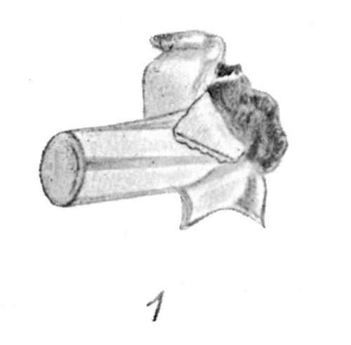
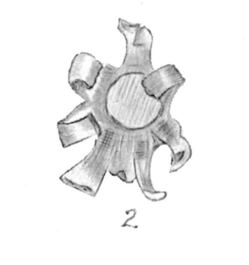
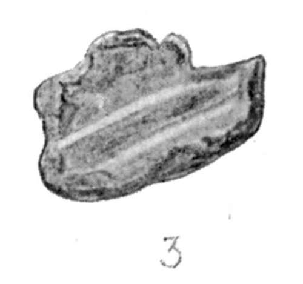
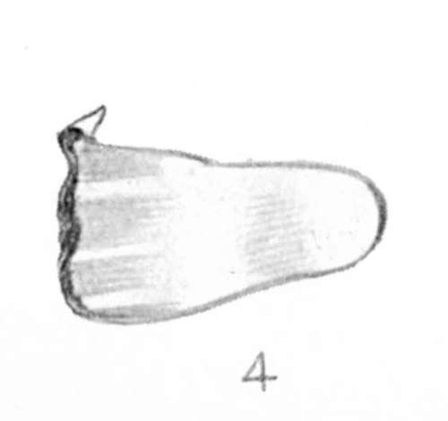
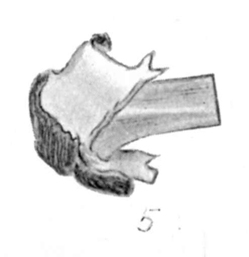
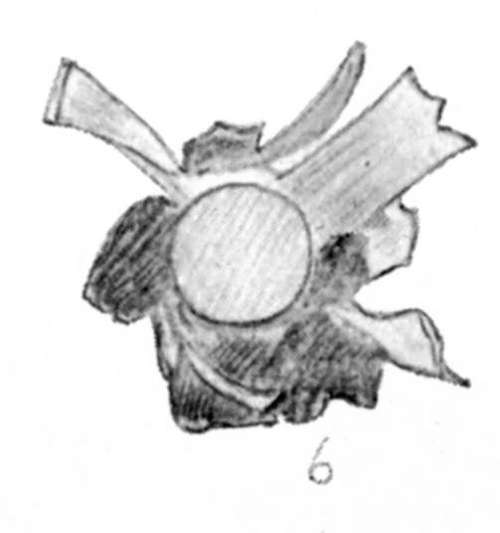

Various Subjects For The Sportsman And Naturalist. Part 8
Description
This section is from the book "Wild Life In Central Africa", by Denis D. Lyell. Also available from Amazon: Wild Life in Central Africa.
Various Subjects For The Sportsman And Naturalist. Part 8
Young sportsmen have much to be thankful for at the present day, for not only have they an abundant literature on sports of all kinds, but the way has been made comparatively easy for them by the spread of civilisation, and communications are so rapid that they can soon reach any ordinary shooting and fishing ground they wish to visit.
How different was it in Mr. Selous' early days, when he hunted in the country which is now known as Southern Rhodesia. Then travel meant a slow progress with ox waggons or on horses, and when he was shooting round Bulawayo and Salisbury he was more cut off from civilisation and the comforts civilisation brings than are most men in the depths of Central Africa to-day.
As I have mentioned in this volume, it is still possible to get quite in the wilds and view Africa as it was ; and it is a great mistake to suppose that Africa as a whole is getting shot out, for such a statement is incorrect. Certain parts, such as Southern Africa and other places close to European settlements, have certainly lost most of their game, and will never regain it unless the country were to be totally abandoned ; but even in such a small territory as Nyasaland there are many hundreds of square miles that have hardly been trodden by the feet of civilised man, and here the game is likely to survive for many generations to come.
When reading some of the old books I have mentioned, over twenty-five years ago, I thought that I was too late to experience any really wild free sport; but, as I mention in the preface, this country is still in much the same condition as I first knew it ten years ago, and the only parts that have slightly changed are those round the small townships, where the land has been taken up by settlers for the planting of tobacco, cotton, and tea.
Therefore, the young sportsmen who are still acquiring knowledge at public and private schools need have no fear that all the game in Africa will have disappeared before they are old enough to go on their first trek to the wilderness. They are not likely to be able to drop sixteen elephants in one day, as the late Mr. Arthur H. Neumann once did in British East Africa, as, very wisely, the Governments of all our African possessions have now limited the number of the game allowed to be shot annually; but they will be able to shoot all they want for trophies, and what more could any sportsman desire than that.
The best guide for the trophy-hunter is, of course, that well-known work, " Records of Big Game," by the late Mr. Rowland Ward, and in it will be found much information regarding the haunts of game all over the world.
The tyro will pick up many useful hints from books which are bound to be useful to him at some time or other, and so much information is now published about the best game countries in different parts of the world that he will have little difficulty in finding his way to a good game country.
It should be remembered that the best sport is usually got by those who leave the beaten track, and who have the energy and self-reliance to break into new lands where the game has not been molested or disturbed.
A last word of advice to the beginner is to shoot in a thoroughly sporting manner, and to remember that other generations of sportsmen will arise who, in their time, will long for the same wild freedom and sport that we to-day are able to enjoy.
In the playing fields he will learn to behave in a manly and sporting manner, and, when he is old enough to engage in field sports, this will not be forgotten.
The charm of all shooting, be it large or small game, is that here we get to the heart of Nature, for the charm is not in the killing, but rather in the wild, natural surroundings, which always give an indescribable fascination to the sport.
(1) 7.9 mm. bullet (expanding) from eland bull.
(2) 7.9 mm. bullet (expanding) from zebra.
(3) Lead core of .404 bullet from buffalo.
(4) Point of .350 (solid) from elephant.
(5) .256 bullet (expanding) from bushbuck.
(6) 7.9 mm. bullet (expanding) from sable antelop
Bullets Cut From Game. (Exact Size.)
IX.—A Few Remarks On Rifles And Equipment
Most of the books on sport published at the present day have a chapter on the subject of battery and outfit, and there is no doubt that it is a most vital matter that the sportsman should have at least one reliable rifle with him.
I may say that my remarks here are intended as a help to the tyro who has not had any practical experience in the field, and who has to take a gunmaker's advice on the selection of a suitable weapon, or weapons,-for a hunting trip. This advice is not always disinterested, unless, perhaps, the budding big-game shooter goes to one of the leading rifle makers. I would never pretend to give advice to a good rifle maker on technical matters as to rifle building, but the practical hunter is more likely to know what is the best killing weapon for big game than the rifle maker, who probably never saw a wild animal outside the bars of a cage in his life.
In choosing a weapon, there are several points which have to be kept in view, and these might be summed up as follows :
Continue to:
- prev: Various Subjects For The Sportsman And Naturalist. Part 7
- Table of Contents
- next: Various Subjects For The Sportsman And Naturalist. Part 9